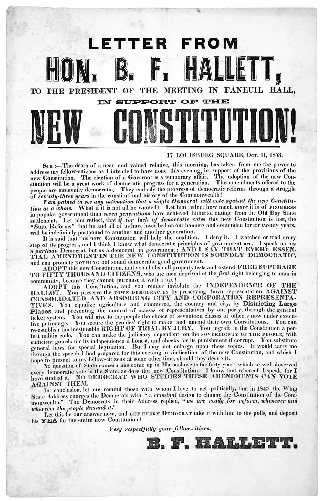

Now it’s time to put everything together. Like good writing, good typography isn’t determined by elements in isolation, but by the relationship of those elements and the effect of the whole.
So far we’ve looked at typographic rules individually. In this chapter, we’ll look at these rules in the context of some common documents. Your goal is to get better at seeing typographic flaws in layouts and fixing them.
Except for websites, the samples in this chapter were created with Microsoft Office 2011 on the Mac. Not my favorite design tool, but its typographic capabilities are typical of those available to the professional writer. If I can make good typography under those conditions, you can too.